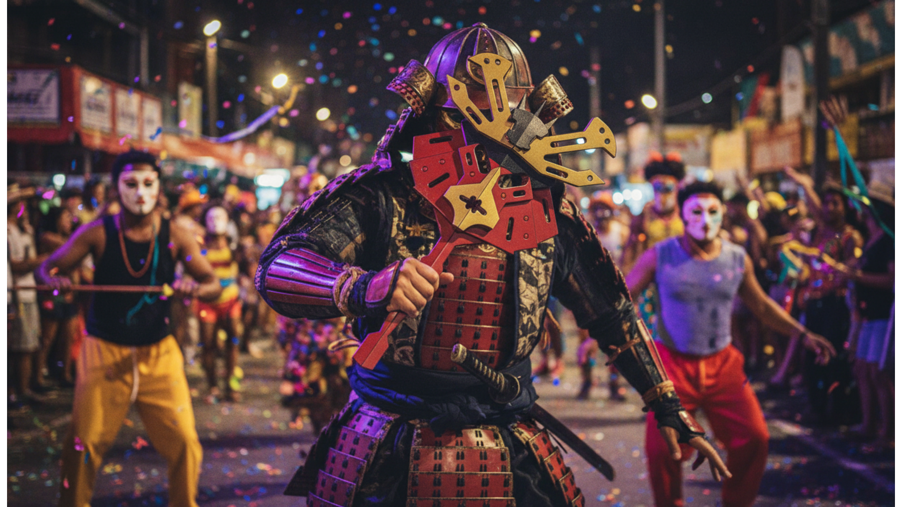
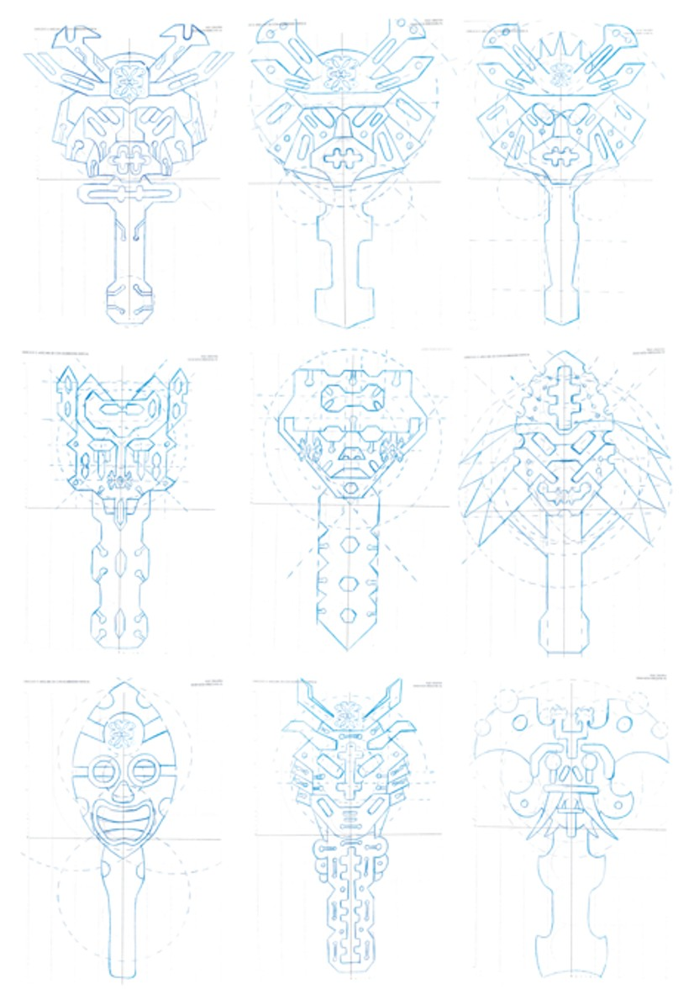
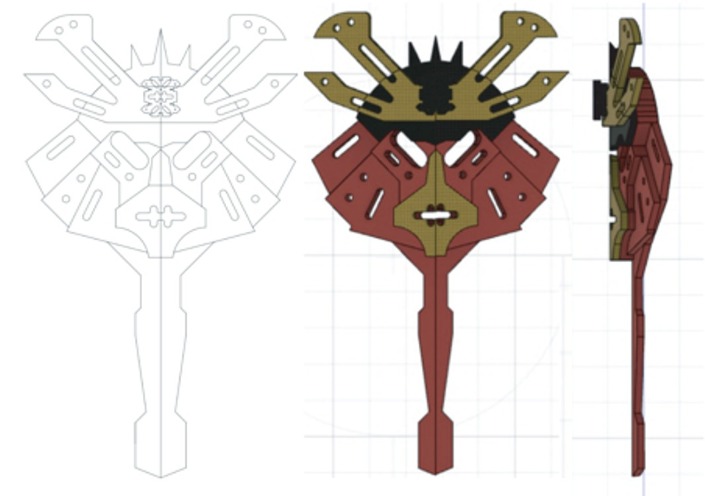
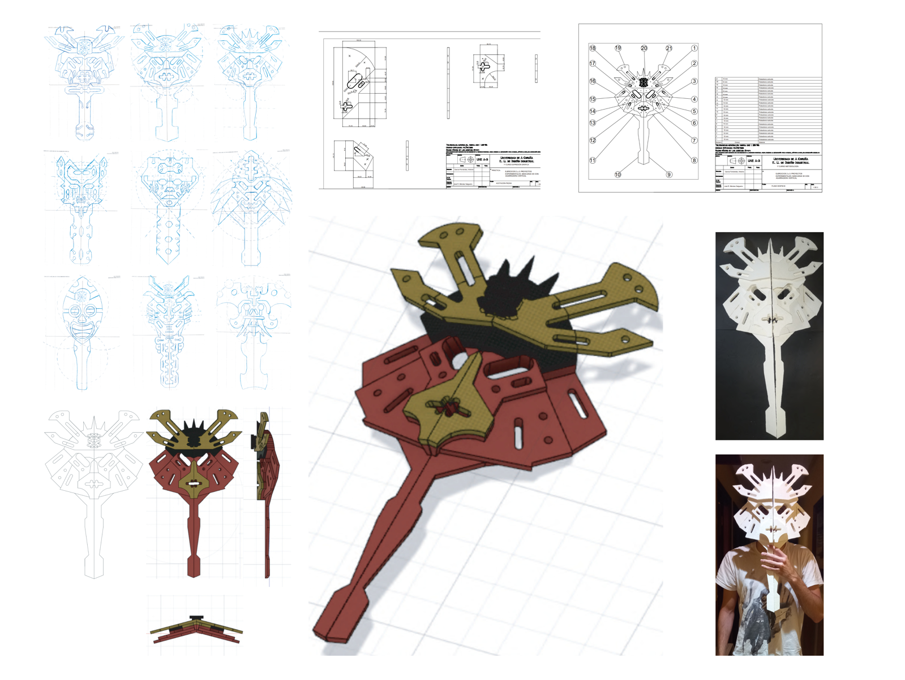

3D Masks
Exercise
Exercise Overview
A first-year foundational design exercise exploring three-dimensional form development through the medium of masks. The brief challenged students to design wearable 3D masks that explore cultural, aesthetic and conceptual territories.
Concept Development
The design draws from Japanese samurai helmet aesthetics, combining angular structural elements with intricate surface textures. The form language contrasts rigid geometric frames with layered decorative details, creating a piece that reads as both ancient and contemporary.


Process
The project moved from hand sketches (orthographic studies of frontal, side, and top views) through iterative CAD development in SolidWorks, culminating in a laser-cut physical prototype assembled from flat sheets. Technical drawings were produced to formal engineering standard.
Materials & Fabrication
Final prototype fabricated via laser cutting, assembled from interlocking flat panels. Two colour variants: gold/bronze upper mask and red structural base — referencing traditional samurai lacquered armour.
